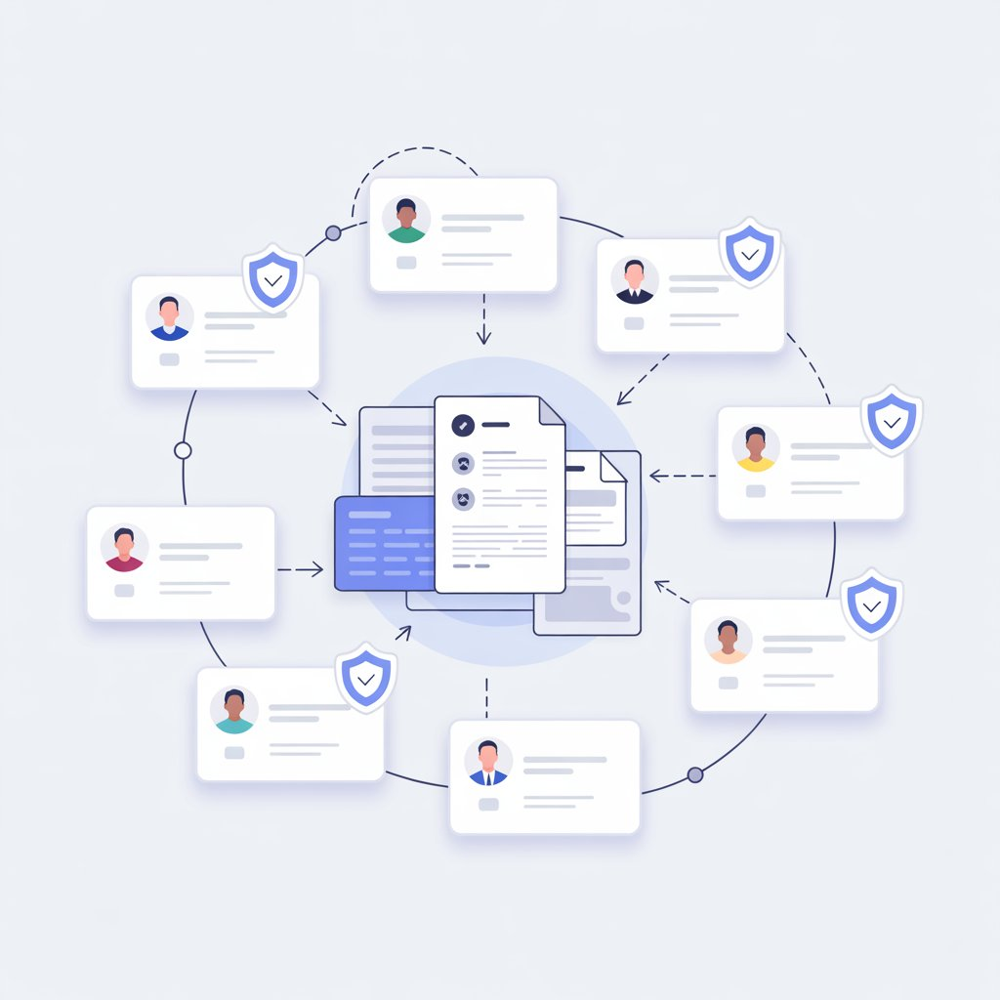

From first-time vendor onboarding to annual MSA renewals, BrillSign gives your procurement team a single, auditable, legally airtight system for every third-party agreement.
Reduction in vendor onboarding time compared to paper-based workflows
Average annual savings for enterprise procurement teams using BrillSign
Uptime SLA — your procurement never pauses, even during peak contract seasons
Average time from vendor invitation to fully executed agreement
Cut through the paperwork chaos. Send legally binding NDAs, MSAs, and SOWs to new vendors instantly with one click. Every document is auto-tracked, and your team gets real-time status visibility the moment a vendor opens — or ignores — the agreement.

Updated your supplier code of conduct? Revising payment terms site-wide? BrillSign's bulk send engine lets you dispatch personalized agreements to your entire vendor roster in one action. Track every distinct signature on a single live dashboard.
Set contract renewal workflows and walk away. BrillSign automatically notifies both parties before expiry, regenerates updated agreements, and queues them for signature — maintaining an unbroken, audit-ready supply chain history for every renewal cycle.
BrillSign manages every stage — from first contact to long-term relationship — in one unified, audit-ready workflow.
Send personalized onboarding packages to new vendors — NDAs, codes of conduct, and SOWs — in a single branded email with one-click signing.
Vendors sign from any device with no account required. Identity verification, geo-timestamps, and device fingerprinting are applied automatically.
Every executed agreement receives an SHA-3 cryptographic seal, a unique fingerprint, and is archived in an immutable record for 99+ years.
Automatic renewal alerts, version-controlled amendments, and real-time compliance monitoring keep your vendor relationships fresh and airtight.
BrillSign integrates natively with the tools your procurement team already uses — no custom development needed.
Stop managing vendor agreements in email threads and spreadsheets. Upgrade to a procurement-grade signature platform trusted by 5,000+ companies worldwide.